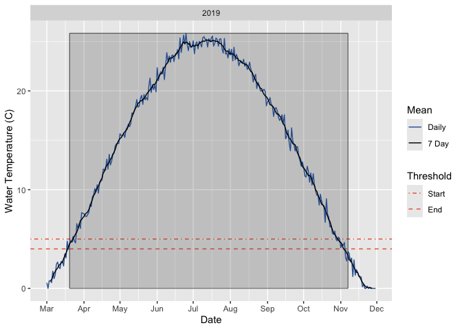

Introduction
gsdd is an R package to calculate Growing Season Degree Days (GSDD), Growing Degree Days (GDD) and Growing Seasons (GSS) from water temperature data.
GSSD is a water temperature metric that is a useful predictor of age-0 trout size at the beginning of winter. It is the accumulated thermal units (in °C) during the growing season based on the mean daily water temperature values. GDD is the GSSD to a particular date.
The GSDD is calculated across the longest consecutive sequence of non-missing values. Truncation occurs when the start and/or end of the sequence of non-missing values is part way through a growing season. If the user chooses to ignore truncation then the returned value(s) are very likely to be less than the actual value(s).
The default values and implementation of the growing season are based on Coleman and Fausch (2007) who stated that
We defined the start of the growing season as the beginning of the first week that average stream temperatures exceeded and remained above 5°C for the season; the end of the growing season was defined as the last day of the first week that average stream temperature dropped below 4°C.
For the purposes of the calculation week refers to a seven day rolling average as opposed to the calendar week. If there are multiple growing ‘seasons’ within the same year then by default the returned value is the sum of the GSDD values for "all" seasons.
Reference
Coleman, M.A., and Fausch, K.D. 2007. Cold Summer Temperature Limits Recruitment of Age-0 Cutthroat Trout in High-Elevation Colorado Streams. Transactions of the American Fisheries Society 136(5): 1231–1244. doi:10.1577/T05-244.1.
Installation
install.packages("remotes")
remotes::install_github("poissonconsulting/gsdd")Implementation
The gssd package provides functions to calculate the GSSD, GDD and GSS from water temperature data.
library(gsdd)
data <- gsdd::temperature_data
gsdd(data)
#> # A tibble: 1 × 2
#> year gsdd
#> <int> <dbl>
#> 1 2019 3899.
gdd(data)
#> # A tibble: 1 × 2
#> year gdd
#> <int> <dbl>
#> 1 2019 3605.
gss(data)
#> # A tibble: 1 × 5
#> # Groups: year [1]
#> year start_dayte end_dayte gsdd truncation
#> <int> <date> <date> <dbl> <chr>
#> 1 2019 1971-03-20 1971-11-07 3899. noneIt also provides a function to plot water temperature data.
gss_plot(data)
And to calculate GSDD from a vector.
x <- gsdd::temperature_data$temperature
gsdd_vctr(x)
#> [1] 3898.806